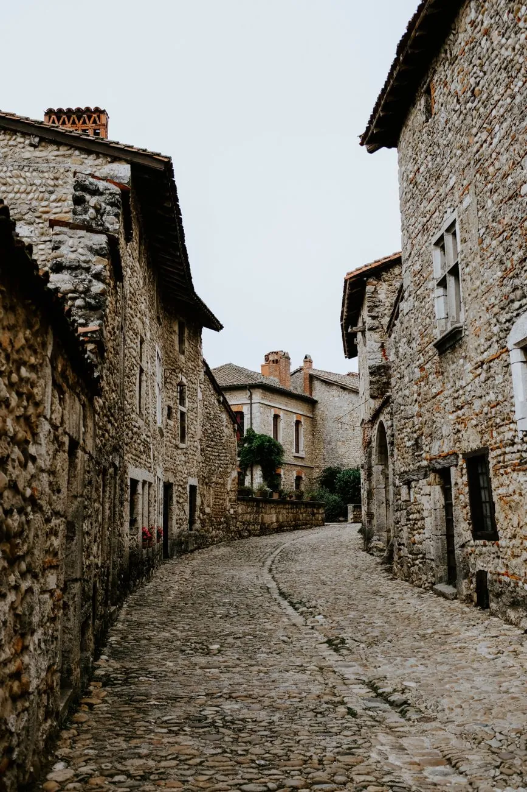
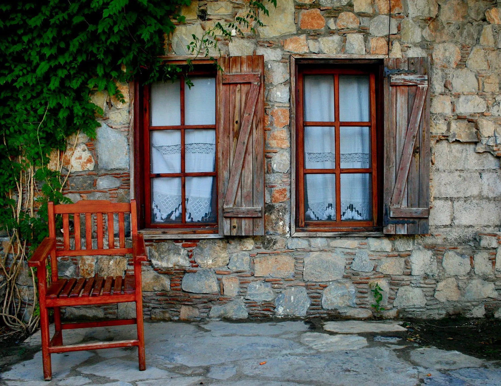
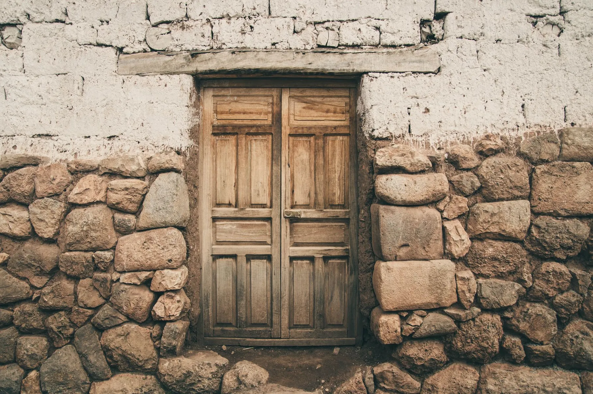
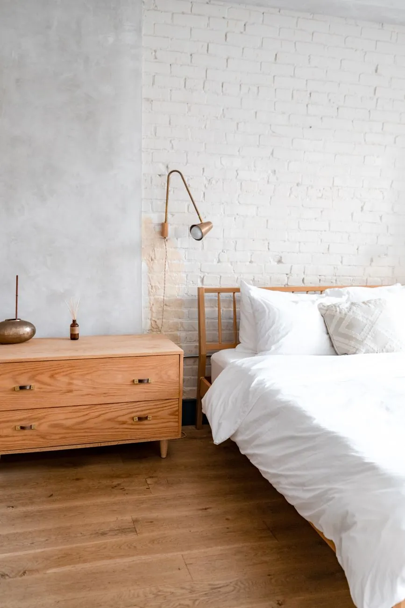
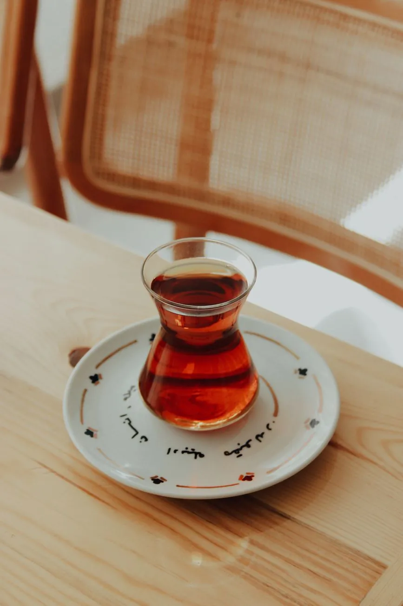
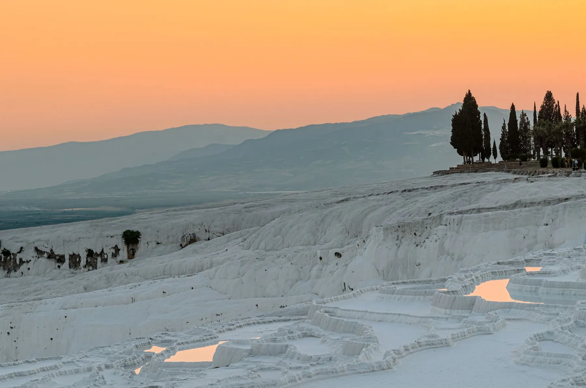

01
Daşlı Sokak, dokuz numara.
Adres, tanıtımın tamamı: Daşlı Sokak No 9, Pamukkale.


Pamukkale'de küçük bir pansiyon. Tarihleri yazın, talebiniz hazır bir WhatsApp mesajı olarak doğrudan bize ulaşsın.
Büyük bir otel değil; Daşlı Sokak'ta dokuz numaralı küçük bir kapı. Tarihleri yazın, cevabı doğrudan bizden alın.
Anlatım örnektir; oda ve olanak bilgileri sizinle doldurulur.
Adres, tanıtımın tamamı: Daşlı Sokak No 9, Pamukkale.

2025'te açıldı. Büyük bir otel yerine küçük bir yer.

Oda tipleri ve yatak düzeni sizinle doldurulur (örnek metin).

Çay, sofra, sakin bir sabah; bu sahne örnektir, kahvaltı bilgisi sizinle doldurulur.

Travertenler, Hierapolis ve beyaz terasların üzerinde gün batımı: konaklamanızı bu rotaya göre kurun.

Kaydırın ya da oklara basın. Yayında pansiyonun kendi fotoğrafları yer alır.


Seçimlerinizi yapın; sağdaki anahtar etiketi ve mesaj kendiliğinden hazırlanır.